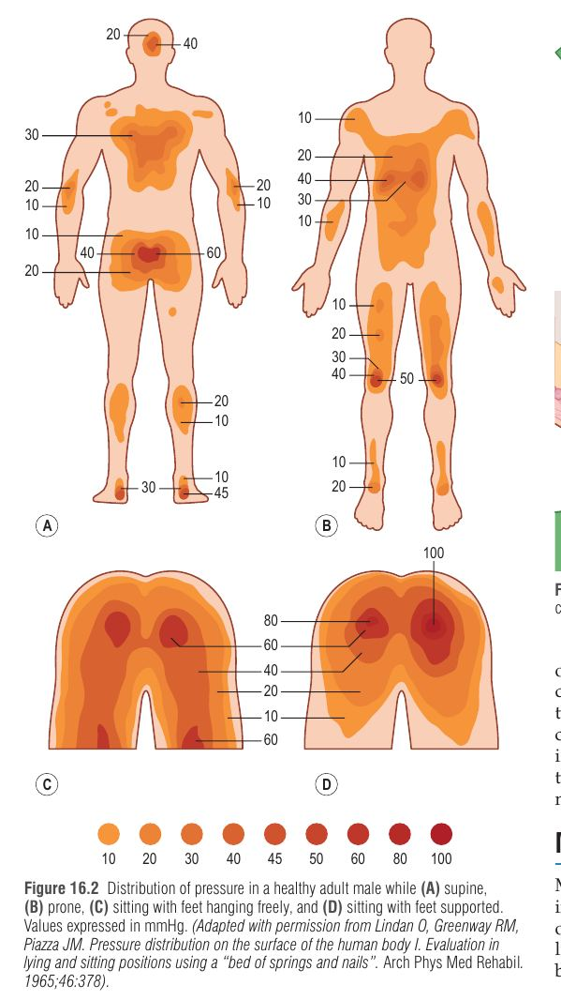
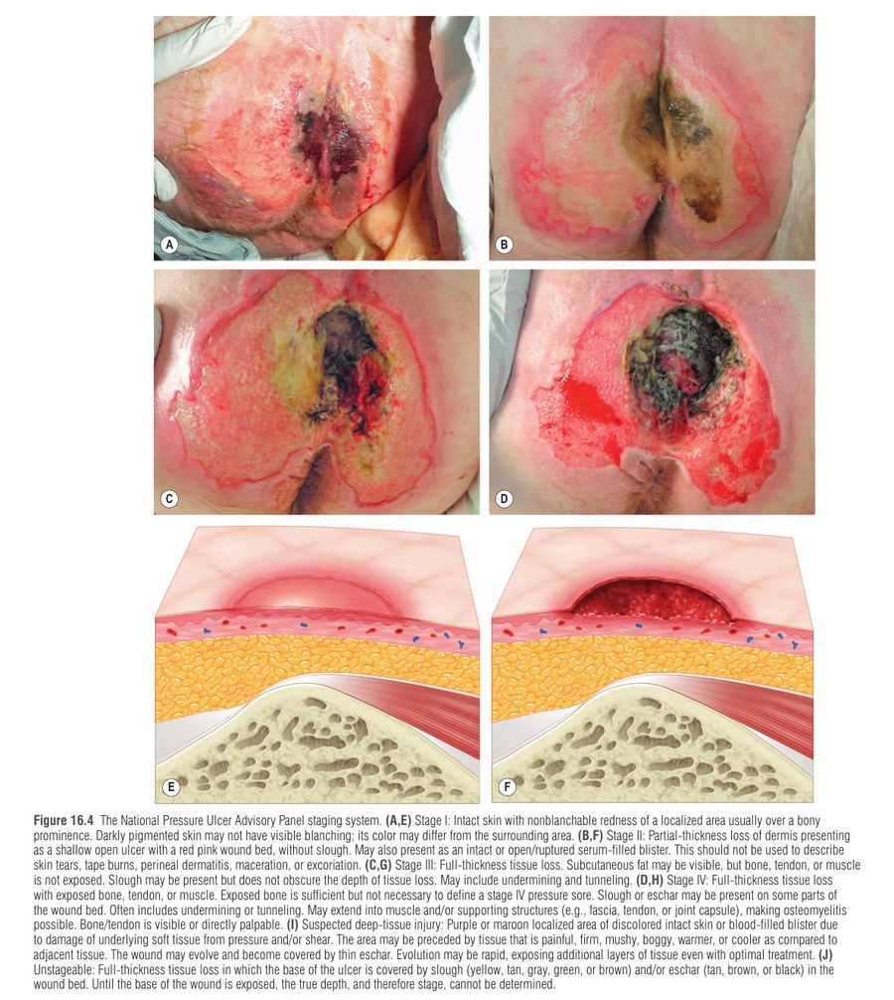
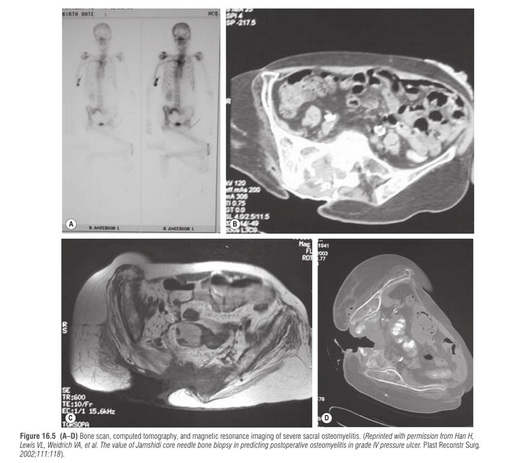
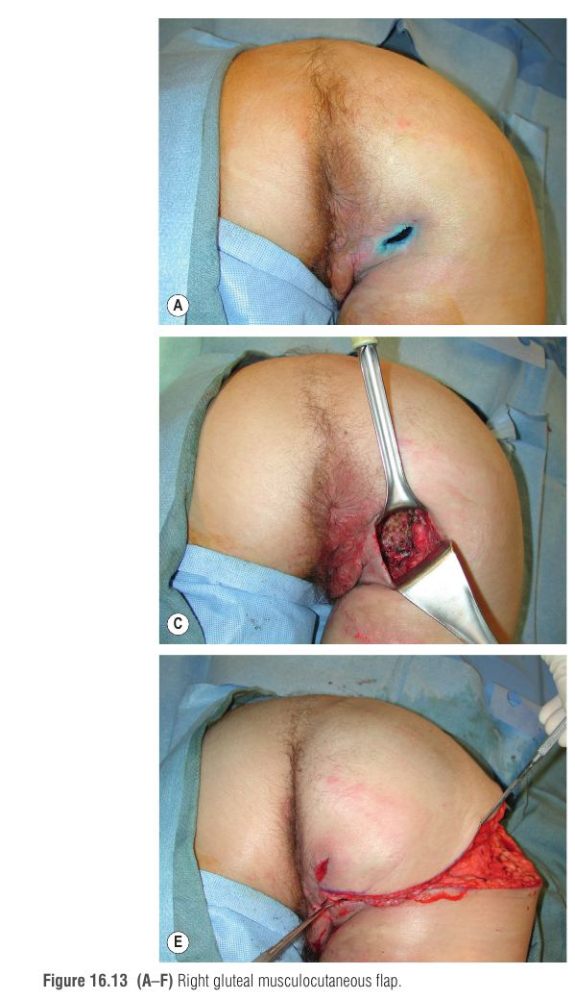
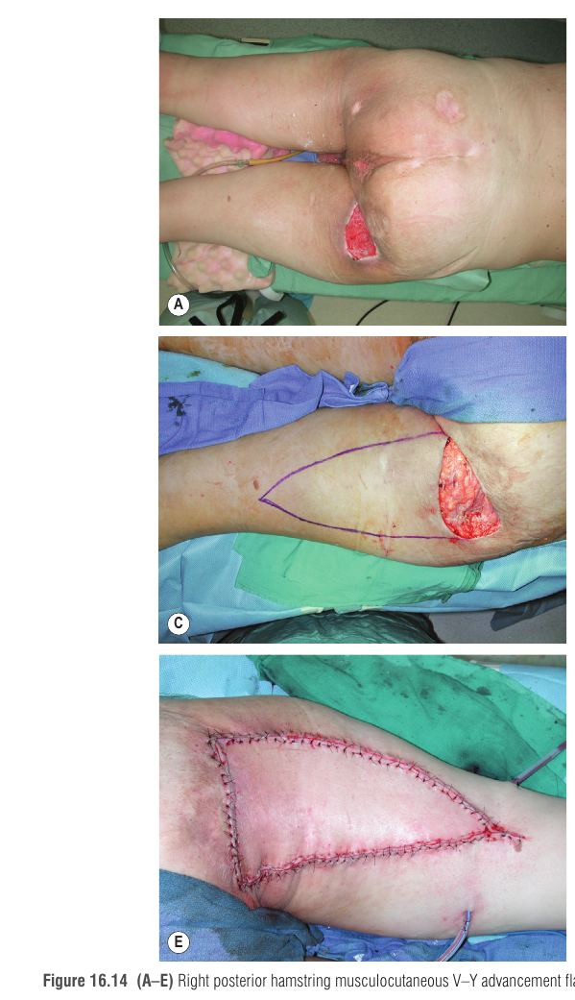

פצע לחץ (pressure ulcer / pressure sore) הוא פגיעה בעור וברקמות שמתחתיו הנגרמת מלחץ ממושך, והוא שכיח מאוד בקשישים, בחולים קריטיים ובפגועי חוט שדרה (SCI). זהו פרק קליני מלא: מנגנון, סיווג, אבחנה, מניעה, טיפול שמרני וניתוחי לפי אזור, וסיבוכים. המסר המרכזי: מניעה היא הטיפול היעיל ביותר, וניתוח ללא אופטימיזציה של המטופל נידון לכישלון.
לחץ חיצוני ממושך גדול מלחץ סגירת הנימים (~32 mmHg, ניסוי Landis 1930) ← חסימת הזרימה בנימים ← איסכמיה ורעב מטבולי של הרקמה ← נמק (השריר ראשון, כי צריכתו המטבולית גבוהה) ← כיב עם בורסה (כיס מצולק) ולעיתים אוסטאומיאליטיס.
הלחץ לא פועל לבד: גזירה (shear) מותחת ומעקמת כלי דם עמוקים; חיכוך (friction) פוגע ישירות בעור (שפשוף, שלפוחיות); לחות מעלה את מקדם החיכוך וממיסה (מקרציה) את העור. הם פועלים בסינרגיה: תוספת קטנה של גזירה מורידה דרמטית את הלחץ הנדרש לאיסכמיה.
הבורסה כיס מצולק סביב כיב כרוני וגדולה בדרך כלל מהפצע הנראה על העור.

| גורם | למה הוא גורם לנזק | נתון מפתח |
|---|---|---|
| לחץ | לחץ מעל לחץ סגירת הנימים חוסם זרימה. אך לחץ לבדו לא תמיד מזיק: רקמות חיבור סופגות חלק, ויש הרחבת כלי דם מושרית-לחץ. נזק בלתי הפיך אחרי כ-2 שעות בלחץ כפול מלחץ סגירת נימים (Dinsdale); שחרור כל 5 דקות מנע נזק בכלבים (Kosiak). | שכיבה על הגב: סקרום, עקב, עורף כ-50-60 mmHg. ישיבה: עד 100 mmHg על האיסכיום. |
| גזירה | העור והתת-עור נעים ביחס לרקמות העמוקות, כלי הדם נמתחים ומתעקמים. "כוח גזירה הרסני יותר מכוח אנכי". דוגמאות: ישיבה חצי-שכובה, החלקה בכיסא גלגלים (מסביר כיב סקרלי בכיסא גלגלים), גרירת מטופל במיטה. | תוספת גזירה קטנה מורידה דרמטית את הלחץ הדרוש לאיסכמיה בסקרום. |
| חיכוך | כוח המתנגד לתנועה בין העור למצע, גורם לשפשוף ושלפוחיות. פגיעה בעור מגדילה אובדן מים דרך האפידרמיס ולחות, והלחות מעלה את החיכוך (לולאת משוב חיובית). | |
| לחות | מגבירה חיכוך, גורמת למקרציה. שתן מנטרל את חומציות העור; צואה מכניסה עומס חיידקי. עור יבש מדי גם הוא גורם סיכון (סדקים, פגיעה בתפקוד המחסום). | אי-שליטה בצואה קשורה בעקביות לפצעי לחץ; בשתן הממצאים מעורבים. אי-שליטה כללית: סיכון פי 5 (Lowthian). |
| תת-תזונה | חלבון חסר מפגע בריפוי ומעלה זיהום. אלבומין נמוך מנבא תמותה ניתוחית והישנות. | טוב: אלבומין 3.5 g/dL ומעלה, פרה-אלבומין 15 mg/dL ומעלה, במגמת עלייה. |
| פגיעה נוירולוגית | (1) אובדן תחושה מגן; (2) אובדן הרחבת כלי דם מושרית-לחץ: בבריאים חיישנים מקומיים משחררים CGRP שמרחיב כלי דם, ובסכרתיים, פראפלגים וקשישים הרפלקס אובד; (3) ספסטיות (עד 78% מחולי SCI) מגבירה עומס מכני. | פצעי לחץ: סיבוך שכיח ביותר ב-SCI וסיבת אשפוז שנייה בשכיחותה. |
| Biofilm ודלקת | בפצע כרוני החיידקים עטופים ב-EPS שחוסם דיפוזיה של אנטיביוטיקה, והם במצב מטבולי איטי, ולכן עמידים. אין סימני זיהום גלויים (אדמומיות, מוגלה). ה-biofilm מושך נויטרופילים לא יעילים שמייצרים ROS, ושומר על איזון לא תקין של MMP/TIMP וחוסר בגורמי גדילה (PDGF, bFGF, EGF, TGF-β). | דברידמן יסודי משבש את הביופילם ל"מצב פלנקטוני" לזמן קצר; בלי טיפול מלא הוא נבנה מחדש תוך 72 שעות. |
שריר רגיש לאיסכמיה יותר מעור (דרישה מטבולית גבוהה), ולכן נמק שרירי עמוק יכול להסתתר מתחת לעור שנראה שלם. זו הסיבה לכך שפצע שנראה קטן עלול להיות רק קצה הקרחון.
הסיווג הנפוץ הוא של Shea בגרסת NPUAP 2007, עם שתי קטגוריות נוספות: חשד לפגיעת רקמה עמוקה ופצע שאינו ניתן לסיווג. "שלב" מונח מטעה, כי פצע שלב IV לא בהכרח עבר שלב I, ופצע מתרפא אינו חוזר אחורה בשלבים אלא מתמלא בגרנולציה.
| שלב | ממצא | טיפול |
|---|---|---|
| I | עור שלם, אדמומיות שאינה מחווירה בלחיצה (קשה לזיהוי בעור כהה); סימן "בסיכון" | שמרני |
| II | איבוד עובי חלקי של הדרמיס, כיב שטחי ורוד, או שלפוחית; לא כולל קרע עור, כוויית נייר דבק, דלקת עור פריאנלית | שמרני |
| III | איבוד עובי מלא, שומן נראה, ללא חשיפת שריר, גיד או עצם; ייתכן חתירה ומנהור | בדרך כלל דורש פלאפ |
| IV | חשיפת עצם, גיד או שריר; אוסטאומיאליטיס אפשרית. חשיפת עצם מספיקה אך לא הכרחית להגדרה | פלאפ + אופטימיזציה, טיפול בעצם |
| חשד לפגיעת רקמה עמוקה | אזור סגול/בורדו של עור שלם או שלפוחית דם; יכול להתפתח במהירות; כואב, קשה או רך מהרקמה סביב | דברידמן עד סיווג |
| לא ניתן לסיווג | הבסיס מכוסה בנמק רטוב (slough) או באסקר; העומק לא ידוע | דברידמן עד לחשיפת הבסיס. חריג: אסקר יציב יבש על העקב משמש כ"כיסוי ביולוגי" ואין להסירו |

נדרשת הערכה של הפצע (שלושה מימדים, מנהור, חתירה, אסקר, גרנולציה, חשיפת עצם, אקסודט, צילום) ושל המטופל (מנגנון הפגיעה, מקורות לחץ וגזירה, אי-שליטה, ספסטיות, תזונה, סכרת, מצב נפשי וחברתי). בדיקות ראשוניות: ספירת דם, כימיה, קראטינין, אלבומין ופרה-אלבומין, CRP/ESR. משטח (swab) מהפצע חסר ערך ואין להשתמש בו להכוונת אנטיביוטיקה; נדרשת ביופסיה.
| בדיקה לאוסטאומיאליטיס | ביצועים / הערות |
|---|---|
| ביופסיית עצם פתוחה / Jamshidi | תקן הזהב; ביופסיה + תרבית + היסטופתולוגיה יחד: PPV 93%, NPV 100% (Han) |
| WBC + ESR + צילום שתי הקרנות | רגישות 89%, סגוליות 88% (Lewis); די בבדיקה חיובית אחת |
| CT / צילום בלבד | רגישות נמוכה (10-30%), סגוליות גבוהה (90-100%) |
| MRI | דיוק 97%, רגישות 98%, סגוליות 89%; מגדיר את היקף הזיהום ומכוון כריתה |
| סריקת עצם (גרעינית) | לא ספציפית, הרבה חיוביים כוזבים בכיבים כרוניים |
| הערכה קלינית של העצם (קשה/רכה) | מנבא גרוע |
שילוב MRI + ביופסיית עצם נותן דיוק אבחנתי גבוה, מזהה את היקף המחלה ואת הפתוגן, וקובע אם לדחות סגירה (6 שבועות אנטיביוטיקה IV אם הביופסיה חיובית) או לסגור מיד.
גם הערכה נפשית חשובה: דיכאון מג'ורי ב-22%-47% מחולי SCI, ומשפיע על הישנות. אם הפצע ישן מאוד ומשתנה או מפריש מחדש, יש לחשוב על כיב מרג'ולין (Marjolin's ulcer, ממאירות בפצע כרוני, בממוצע אחרי כ-20 שנה) ולבצע ביופסיה.

הסולם הנפוץ ביותר: שישה מדדים (תפיסת חושים, לחות, פעילות, ניידות, תזונה, חיכוך וגזירה), ציון 6-23 (נמוך = סיכון גבוה), סף כ-16. רגישות 74%, סגוליות 68%; פחות אמין מעל גיל 80 ולא כולל ספסטיות. (Norton: טווח 5-20, בעיקר לגריאטריה). שימוש בסולמות מדויק יותר משיפוט קליני, אך לא הוכח שמפחית את השכיחות.
| תחום | עיקרי הדברים |
|---|---|
| הפחתת לחץ | משטחים סטטיים (CLP: קצף, ג'ל, אוויר סטטי, כבשים) מול משטחים מתחלפים (AP). מיטות LAL (low air loss, פחות מ-25 mmHg) ו-air-fluidized (פחות מ-20 mmHg, יקרות וכבדות). המלצת ACP: מזרן סטטי מתקדם לכל בסיכון, לא AP שגרתי. המשטחים מאבדים יעילות בהגבהת ראש ל-45° ומעלה. פעולות הקלת לחץ בישיבה: לפחות כל 15 דקות. כרית לכיסא גלגלים: עובי עד 8 ס"מ מיטבי. |
| הטיות | הנתונים מוגבלים; אין הוכחה שתכיפות גבוהה יותר מועילה (Defloor: כל 4 שעות עם מזרן קצף מיוחד הצליח כמו כל 2 שעות על מזרן רגיל). |
| טיפול בעור | ניקוי עדין (לא סבון חם), לחות (emollients, humectants), מוצרי מחסום, בקרת אי-שליטה (אי-שליטה בצואה: דיאטה, אנטי-מוטיליים, ולבסוף קולוסטומיה). |
| ספסטיות | פיזיותרפיה, ואז תרופות (baclofen, diazepam, tizanidine, clonidine, dantrolene, gabapentin), באקלופן אינטרתקלי, כימו-דנרבציה (botulinum, phenol), ניתוח. כדאי לשקול כי לפעמים ספסטיות מועילה ליציבות. |
| תזונה | ייעד: אלבומין 3.5 g/dL ומעלה, פרה-אלבומין 15 mg/dL ומעלה. מומלץ חלבון או חומצות אמינו. אין ראיות לתוספי ויטמין C או אבץ, חוץ ממטופלי סטרואידים כרוניים: ויטמין A 10,000-25,000 IU ליום (שבוע לפני, 4 ימים אחרי). |
| עישון (כולל סיגריה אלקטרונית) | ניקוטין מכווץ כלי דם, CO מדחיק חמצן מהמוגלובין, ציאניד מעכב נשימה תאית. הפסקה לפחות 4 שבועות לפני ואחרי ניתוח. |
| סוכרת | היפרגליקמיה פוגעת בזרימה, בפיברובלסטים ובחיסון. HbA1c מעל 6%: סיכון פי 16 לדהיסנציה משמעותית. גלוקוז מעל 200 mg/dL אפילו פעם אחת מעלה סיכון. |
| דברידמן וחבישות | דברידמן חד הוא אבן הפינה. wet-to-dry מסיר גם רקמה בריאה. אנזימים וג'וקים (maggots) רק כשניתוח אסור. חבישות לפי הפצע (hydrocolloid ושכבות שטחיות, alginate לנוזליים). נוגדי חיטוי (Dakin, חומצה אצטית) לטווח קצר בלבד, כי הורגים פיברובלסטים. כסף מעכב ריפוי בפצע לא מזוהם. |
| NPWT | 125 mmHg, מסיר אקסודט ומשפר זרימה. ראיות מוגבלות בפצעי לחץ. NPWTi-d (עם הזלפה): מפחית ביופילם וניתוחי דברידמן. NPWT על חתך סגור אחרי שחזור: ירידה של 74% בסיבוכים (Papp). |
שלב I-II: טיפול שמרני. שלב III-IV: בדרך כלל פלאפ, אחרי אופטימיזציה. פצע לחץ אינו מסכן חיים, ולכן אין למהר לניתוח לפני שהמטופל מוכן.
כריתה מלאה של הבורסה (צביעה ב-methylene blue) ← אוסטקטומיה רדיקלית עד עצם בריאה ומדממת ← מילוי חלל מת וכיסוי בפלאפ רקמה ← פלאפ גדול מהנדרש ← קו תפר הרחק מנקודת הלחץ ← השתלת עור באתר התורם ← שימור "טריטוריות" לפלאפים עתידיים.
סגירה ראשונית נכשלת (מתח), שתל עור לא עמיד ואינו מספק נפח. דברידמן לא פוגשים בפשרות: דברידמן חלקי הוא סיבה שכיחה לכישלון פלאפ. ניתן גם להשתמש ב-Versajet (הידרו-דברידמן). הבורסה נמשכת לרוב רחוק מעבר לפצע הנראה.
| אזור | אפשרויות עיקריות | הערות |
|---|---|---|
| סקרום | סיבוב מיוקוטני של gluteus maximus (נבחר), פלאפ V-Y, SGAP, פלאפים טורקולומבריים | בהולכים: חצי עליון של השריר. אספקה: עורק גלוטאלי עליון (מעל ה-piriformis). |
| איסכיום | V-Y של ה-hamstring (נבחר), פלאפ פסציוקוטני של הירך האחורית, gracilis, IGAP, rotation של gluteus | ה-V-Y: אספקה מפרפורטורים של ה-profunda; ניתן לקדם שוב. בהולכים: רק biceps femoris. IGAP: ללא שריר, סגירת אתר תורם ראשונית. |
| טרוכנטר | TFL (V-Y או סיבוב), vastus lateralis, ALT | TFL: ענפי הענף הצירקומפלקסי הלטרלי של הפמורליס. אפשר להאריך עד 15-20 ס"מ מעל הקונדיל. |
| עקב | Reverse sural, medial plantar artery, פלאפ חופשי | reverse sural: גודש ורידי שכיח, מומלץ delay. medial plantar: עור ללא נשיאת משקל, עמיד. |
| זיהום מפרק הירך | Girdlestone (כריתת ראש וצוואר הפמור) + מילוי ב-vastus lateralis |


P – Pressure – לחץ מעל 32 mmHg.
S – Shear – גזירה, "הרסנית יותר מלחץ אנכי".
F – Friction – חיכוך.
M – Moisture – לחות.
N – Nutrition – תזונה (אלבומין 3.5).
דמייני מטופל בכיסא גלגלים שמחליק לאט מטה, כמו אדם שנכנס לבור חול. מתחתיו מזרן קצת "מקרטע" (הלחץ), החול מתחכך בעור (חיכוך), הכסא מושך את הגב בכיוון אחד ואת העצם בכיוון אחר (גזירה), החול רטוב (לחות), והחוף חסר מזון להבנות מחדש (תזונה). כשהחול נעשה עמוק, נוצר בור עם דופן מצולקת (הבורסה), ואם מנסים לסתום אותו בלי לחפור את כל הדופן, החול שוב נשפך.
גבר בן 32, פראפלגי אחרי פגיעת חוט שדרה בגובה T10 לפני 8 שנים, מתנייד בכיסא גלגלים, מגיע עם כיב איסכיאלי ימני בגודל 5 ס"מ שנחשפת בו עצם מוחשית, שהוגדר כשלב IV. הוא מדווח על אי-שליטה בצואה מדי פעם וספסטיות ניכרת. אלבומין 2.9 g/dL, HbA1c 8.1%, והוא מעשן קופסה ביום. ב-MRI נראית אוסטאומיאליטיס של האיסכיום. הוא מבקש "לסגור את הפצע השבוע".